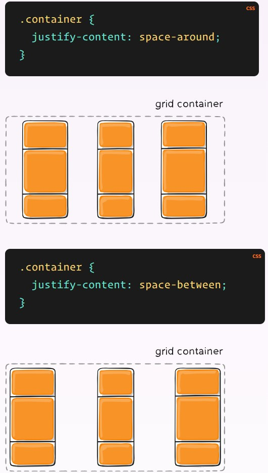
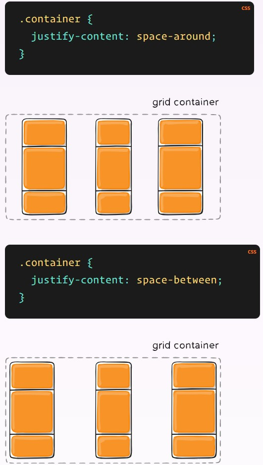
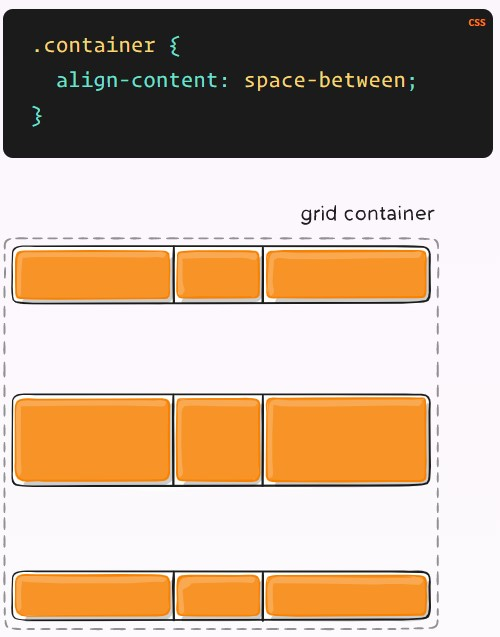
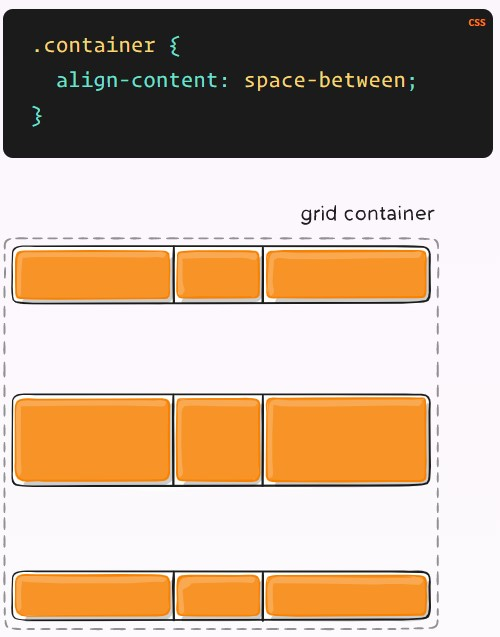

Css Grid
CSS Grid es un sistema de diseño bidimensional basado en cuadrículas que tiene como objetivo cambiar completamente la forma en que se diseña interfaces de usuario basadas en cuadrículas (Bidimensional). Al igual que las tablas, el grid layout permite a un autor alinear elementos en columnas y filas. Sin embargo, con CSS grid son posibles muchos más diseños y de forma más sencilla que con las tablas.
Al igual que pasa con Flexbox se requiere que el elemento contenedor tenga la propiedad display con valor de grid, todos los item dentro del estecontenedor seguira el flujo, alineacion y justificacion regida por las reglas establecidas por el usuario o en su defecto por lo valores por defecto de cada propiedad.
Configurando el Layout en columnas y filas
La unidad fr

áreas de plantilla de cuadrícula
Define una plantilla de cuadrícula haciendo referencia a los nombres de las áreas de cuadrícula que se especifican con la grid-areapropiedad. La repetición del nombre de un área de cuadrícula hace que el contenido abarque esas celdas. Un punto significa una celda vacía. La sintaxis en sí misma proporciona una visualización de la estructura de la cuadrícula.


espacio entre columnas espacio entre filas
Define una plantilla de cuadrícula haciendo referencia a los nombres de las áreas de cuadrícula que se especifican con la grid-areapropiedad. La repetición del nombre de un área de cuadrícula hace que el contenido abarque esas celdas. Un punto significa una celda vacía. La sintaxis en sí misma proporciona una visualización de la estructura de la cuadrícula.

Justificar elementos
Alinea los elementos de la cuadrícula a lo largo del eje en línea (fila) (en oposición al align-itemsque se alinea a lo largo del eje del bloque (columna) ). Este valor se aplica a todos los elementos de la cuadrícula dentro del contenedor.

Alinear elementos
Alinea los elementos de la cuadrícula a lo largo del eje del bloque (columna) (en oposición al justify-itemsque se alinea a lo largo del eje en línea (fila) ). Este valor se aplica a todos los elementos de la cuadrícula dentro del contenedor.

Justificar Contenido
A veces, el tamaño total de su cuadrícula puede ser menor que el tamaño de su contenedor de cuadrícula. Esto podría suceder si todos los elementos de su cuadrícula tienen el tamaño de unidades no flexibles como px. En este caso, puede establecer la alineación de la cuadrícula dentro del contenedor de la cuadrícula. Esta propiedad alinea la cuadrícula a lo largo del eje en línea (fila) (a diferencia de lo align-contentque alinea la cuadrícula a lo largo del eje del bloque (columna) ).

 


Alinear Contenido
A veces, el tamaño total de su cuadrícula puede ser menor que el tamaño de su contenedor de cuadrícula. Esto podría suceder si todos los elementos de su cuadrícula tienen el tamaño de unidades no flexibles como px. En este caso, puede establecer la alineación de la cuadrícula dentro del contenedor de la cuadrícula. Esta propiedad alinea la cuadrícula a lo largo del eje del bloque (columna) (a diferencia de lo justify-contentque alinea la cuadrícula a lo largo del eje en línea (fila) ).

 
